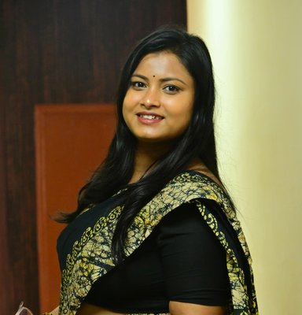
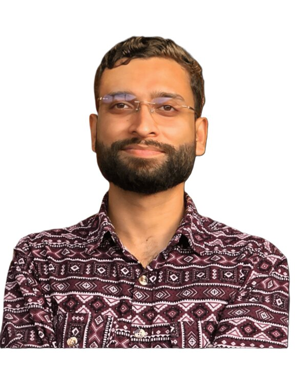
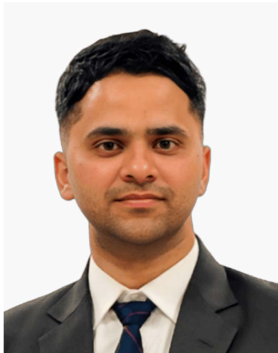

Hrishikesh Singh
PhD Scholar · since 2022
Unravelling long-term flood risk dynamics over India: lessons for developing adaptation and resilience strategies
Prime Minister's Research Fellow
Home / People / Research Scholars
Doctoral scholars currently in the group, and the questions each of them is working on.
12 doctoral scholars are currently working in the lab.
PhD Scholar · since 2022
Unravelling long-term flood risk dynamics over India: lessons for developing adaptation and resilience strategies
Prime Minister's Research Fellow
PhD Scholar · since 2023
Leveraging geomorphic classifiers and machine learning techniques for characterizing flood resilience
PhD Scholar · since 2023
Quantifying climate-sensitive hydrological and public-health risks from urban flooding
PhD Scholar · since 2023
Compound risks from floods and droughts: deciphering hazard inter-dependencies under changing climate

PhD Scholar · since 2024
Glacial lake formation and outburst flood propagation under climatic and anthropogenic stressors in the Indian Himalayas
Co-supervised with Prof. Ashish Pandey
PhD Scholar · since 2024
Quantifying climate- and weather-induced multi-hazards using deep learning models across the Indian subcontinent
Co-supervised with Prof. Ashish Pandey and Prof. Anil K. Gupta

PhD Scholar · since 2024
Water security under climate and human stressors: modelling water availability and allocation

PhD Scholar · since 2025
Urban flood modelling and resilience assessment through digital twins: a multi-platform approach for Indian megacities
PhD Scholar · since 2025
Hydroclimatic extremes in reservoir-regulated catchments: spatio-temporal dynamics of floods and droughts
Part-time
PhD Scholar · since 2022
Identification of critical soil erosion-prone areas and preparation of the CAT Plan
Part-time; main supervisor Prof. Ashish Pandey
PhD Scholar · since 2023
Integrated assessment of climate change and land use/land cover dynamics on water resources, Ziway Abijata Basin, Ethiopia
Main supervisor Prof. Ashish Pandey

PhD Scholar · since 2025
Assessing the impacts of climate change on human health: pathways, risks, and adaptation in India
Main supervisors Prof. Anil K. Gupta and Prof. Ashish Pandey